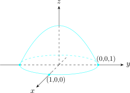

1 Functions Of Several Variables
Most quantities worth measuring depend on more than one thing, and this section extends the differential calculus to that setting.
The extension is not a formality. With one variable a point can be approached from only two sides; with two there are infinitely many paths, and a function may behave perfectly along every straight line and still have no limit. Limits and continuity are therefore settled first.
What follows is built on one idea: near a point, a smooth function of several variables is well approximated by a linear one, and the partial derivatives are what specify it. From that come the directional derivative and the gradient — which points in the direction of steepest increase and whose length is that rate — then the chain rules, Taylor’s formula, and the classification of critical points, where a genuinely new possibility appears in the saddle.
The section closes with implicit functions and Jacobians. The Jacobian determinant measures how a change of variables stretches area or volume, and it is the object that decides when a system can be solved for one set of variables in terms of another. It returns in the next section as the factor in the change of variables formula for multiple integrals.
A function \(f\) of two variables is a correspondence that associates with each pair \((x,y)\in D\), a unique real number, denoted \(f(x,y)\). \[z = f(x,y)\] \begin {align*} z & - \text {dependent variable}\\ x,y & - \text {independent variables}\\\\ \end {align*}
Examples of functions of two or three variables
- \(-\)
- Volume of Cylinder \(\displaystyle {V = \pi r^2 h}\)
- \(-\)
- Ideal gas law \(\hspace {0.4cm}\displaystyle {P = \frac {RT}{V}}\)
- \(-\)
- \(z = f(x,y) = \sqrt {1 - x^2 - y^2}\) \begin {align*} \text {Domain} & = \{(x,y)\hspace {0.1cm}|\hspace {0.2cm} x^2 + y^2 \leq 1\}\\\\ \text {Range of}\hspace {0.2cm} z & = \{z\hspace {0.1cm}|\hspace {0.2cm} 0\leq z \leq 1\}\\ & = [0,1]\\ \end {align*}
In \(3D\), the set of points \((x,y,z)\) such \(z = 1 - x^2 - y^2\) \[\implies \hspace {0.5cm} z^2 = 1 - x^2 - y^2\]
\[ x^2 + y^2 + z^2 = 1 \hspace {0.2cm}\text {i.e Sphere with radius 1}\]
\[z = \sqrt {1 - x^2 - y^2}\hspace {0.3cm}\text {is a hemisphere of radius}\]

1.2 Limits and Continuity
1.3 Directional Derivatives and Gradient Vector
1.4 Maximising the Directional Derivative
1.5 Maximum and Minimum Values
1.6 Extrema for Functions with Side Conditions (Constraints)
1.7 Absolute Maximum and Minimum Values
1.8 Taylor’s Formula For Functions of Several Variables
1.9 Composite Functions and Chain Rule Differentiation
1.10 Euler’s Theorem on Homogeneous Functions
1.11 Implicit Functions and Jacobians
1.12 Jacobians
1.13 Implicit Differentiation
1.14 Implicit Function Theorem
1.15 Functions From \(\mathbb {R}^n\) To \(\mathbb {R}^m\)
1.16 Inverse Function Theorem
1.17 Functional Dependence
1.18 Practice Problems
Questions on this section
Stuck on something here? Ask below and it stays attached to this topic.